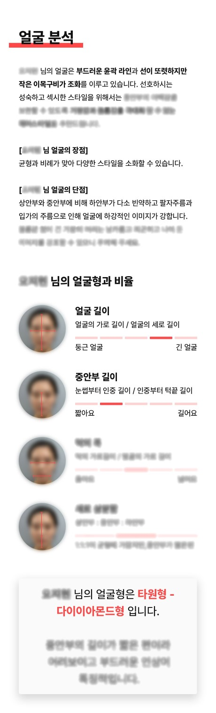
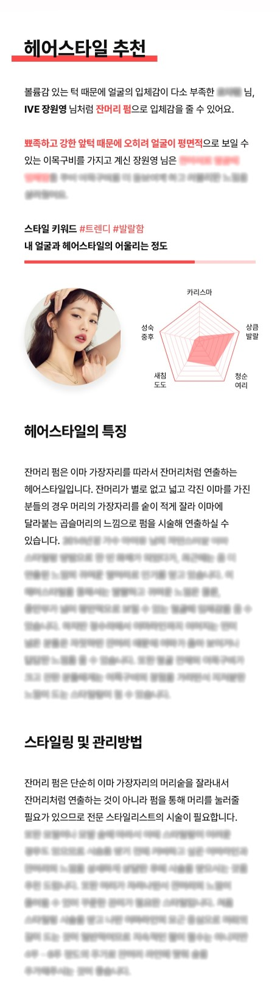

당연하고 뻔한 소리만 해서 적용이 어려웠던 컨설팅은 잊으셔도 좋습니다.
나도 몰랐던 내 얼굴의 특징과 나만의 매력, 파인드뷰티가 찾아드릴게요.
정상가 55,000원
런칭 특가 33,000원 (40%)
퍼스널 스타일링 신청하기여러분은 태어나서 지금까지
얼마나 많은 헤어스타일을 시도해 보셨나요?
그 중 만족스러웠던 경험은 또 얼마나 있으신가요?
혹시 계속되는 스타일 실패에 지쳐
무난한 스타일로 유지하고 계시지는 않으신가요?
모르고 계셨던 여러분의 특징과 매력을 찾는다면
보다 빛나는 스타일링이 가능합니다.
당신만의 헤어 디렉터, 파인드뷰티와 함께
쉽고, 빠르고, 정확하게 컨설팅을 받아보세요!
사실 얼굴 분석을 하면 제 얼굴에 대한 단점을 너무 적나라하게 알게 돼서 충격 받을까봐 단단히 맘먹고 있었는데 전 잘 몰랐던 제 얼굴이 가진 매력과 장점 위주로 상세하게 써주셔서 보고서를 읽으면서 너무 재밌고 괜히 기분이 좋아지더라구요!ㅎㅎ
이번 컨설팅를 통해 나를 더 사랑할 수 있는 기회가 된 것 같아요. 나에 대해 정확히 알고, 나를 더 아름답고 나답게 꾸밀 수 있을 것 같아요. 다른 컨설팅들은 정말 틀에 박힌 내 취향과는 전혀 상관 없는 헤어스타일을 추천하곤 했는데 파인드뷰티는 내 취향에 맞춰, 내가 원하는 무드는 어떤 무드인지 정말 맞춤형으로 작성해줍니다.
오 정말 제가 원하던게 딱 맞아요!!! 감사합니다 ㅎㅎ 정독해서 몇 번 읽어 봤어요!!! 막연히 생각하던 거를 딱 찝어 주시니 좋네요!! 그동안 정반대로 생각하고 있던 것도 있구요.
유행하는 머리가 너무 예뻐 보여서 나도 했다가
별로 안 어울려서 속상했던 적 모두 있으시죠?
자신의 이목구비와 이미지에 맞게
퍼스널 스타일링을 해야 한다는 것도 알고요.
그렇지만 정작 스스로의 얼굴에 대해서는
얼마나 자세하게 알고 계신가요?
단순히 거울을 보고, 혼자 고민해서는
쉽게 어울리는 스타일을 찾기가 어렵습니다.
얼굴에서 조화와 비례를 이루는 요소는 너무 많고,
조금만 달라져도 전혀 다른 인상을 주기 때문이죠.
얼굴에 곡선이 많으면 부드러운 인상이 되고 반대로 직선이 많으면 도도하고 새침해 보입니다.
눈·코·입 사이의 여백이 클수록 얼굴이 성숙해보이고, 얼굴이 가로로 길면 좀 더 순하고 어린 느낌을 줍니다.
하지만 이런 단순한 개념만으로는 누구나 쉽게 적용하기가 어렵죠.
얼굴의 곡선과 직선이 두드러지는 부분이 어디인지, 이목구비 중 어느 곳이 가장 조화로운 비율인지, 눈·코·입은 각각 어떤 느낌을 주는지, 일방적으로 예쁘다/못생겼다를 말하는 것이 아닙니다.
우리 모두 가지고 있는 자연스러운 매력과 기본적으로 뿜어져나오는 그 사람만의 이미지를 이해하기 쉽게 데이터로 보여드리는 것이죠.
얼굴 데이터는 물론, 여러분이 평소 가지고 있는 스타일링에 대한 고민과 선호하는 이미지 그 모든 것에 대한 파인드뷰티만의 답을 보다 직관적이고 상세하게 전달드립니다.
커팅 스타일, 기장감, 모발의 볼륨감, 헤어스타일링까지! 여러분의 얼굴에 찰떡 같은 헤어스타일을 이해하기 쉽게 레포트에 담아냈습니다.
지금까지의 퍼스널 스타일링은
전문가의 경험과 노하우에 의존해야 했습니다.
그랬기 때문에 퍼스널 스타일링은
우리들에게 멀고, 비싸고, 어려웠습니다.
하지만 파인드뷰티는 AI 기술과
전문가의 노하우를 접목시켜
퍼스널 스타일링 서비스를 만들었습니다.
지금 바로 파인드뷰티를 통해
쉽고 빠르게 인생헤어를 찾아보세요!
A. 성형외과 실장님, 탑 스타일리스트, 메이크업 아티스트들이 고객들의 얼굴에 맞는 스타일링을 할 때 고려하는 얼굴의 인상을 좌우하는 요소들을 정밀하게 데이터화해서 여러분들도 모르고 계셨던 얼굴의 특징을 알려드립니다.
파인드뷰티 얼굴 분석 보고서를 통해서 알 수 있는 것은 다음과 같습니다.
1. 페이스라인 : 상/중/하안부 비율, 이마라인, 정면과 측면 입체감, 얼굴 길이감, 광대뼈와 턱선 모양, 얼굴 윤곽의 전반적인 직선/곡선 비중
2. 눈매 : 이마와 눈썹의 골격 특징, 눈 크기, 눈앞머리와 눈꼬리, 눈의 기울기
3. T존 : 이목구비 대비 코의 높이, 미간과 콧대, 콧볼, 코끝, 코 길이
4. 입매 : 입 크기, 입술 볼륨감, 입술라인 유형, 인중과 팔자주름, 입술 위치
총 90개의 페이스 포인트를 기준으로 여러분의 얼굴을 분석해 드립니다.
A. 파인드뷰티의 서비스는 '모두가 가지고 있는 고유한 아름다움'을 찾기 위해 만들어졌습니다.
단순히 '예쁘다', '못생겼다'로 가르고 평가하기 위한 것이 아니죠. 내 얼굴이 가지고 있는 비율을 정확하고 객관적인 수치로 표현하고, 그 과정에서 내 얼굴에 대해 몰랐던 사실을 알아가고, 재미를 느끼기 위한 거죠.
A. 파인드뷰티는 스타일링에 관심이 아주 많은 디자이너와 스타일링에는 크게 관심이 없지만 음악을 좋아하는 개발자가 함께 성형외과 전문의와 청담동 원장님들께 자문을 받아가며 만든 서비스입니다.
'사진 몇 장과 그 사람이 원하는 스타일에 대한 설문 조사만으로 온라인 스타일링을 통해 만족감을 줄 수 있을까?' 라는 단순한 호기심에서 시작했고, '얼굴'이 가지고 있는 여러 상대적인 '비례'와 '수치'를 통해 한 사람의 얼굴을 논리적으로 표현해보고 싶었습니다.
A.눈썰미가 아주 좋으신 분, 자기에게 맞는 찰떡같은 스타일링을 다양하게 시도하고 계신 분, 어울리든 어울리지 않든 그저 다양하고 과감한 시도에 열려 있으신 분들께는 파인드뷰티의 보고서가 그닥 놀랍지 않을 수도 있겠습니다...만,
여러분의 얼굴이 데이터로 표현되었을 때, 그게 얼마나 정교하게 얼굴 특징을 잡아내는지를 눈으로 보신다면 아마 깜짝 놀라실 거예요!
더불어 여러분과 가장 비슷한 비율을 가진 연예인이나 유명인들이 누구인지, 어디서 그 묘한 공통점이 느껴지게 되는건지를 안다면 더 재밌을 거예요.
A. 보고서는 크게 두 파트로 나눠집니다.
첫째, 얼굴 분석 파트에서는 '얼굴형, 눈매, 콧대, 입술, 피부' 각각에 대해서 여러분의 얼굴 데이터를 추출해서 드립니다. 또한 각각의 비율이 합쳐져서 전체적으로 어떠한 이미지를 가지게 되는지에 대해서도 설명해 드리고요. 마지막으로 여러분의 얼굴에서 보이는 가장 특징적인 비율을 소개해 드리고, 이해하시기 쉽도록 그와 비슷한 특징을 가진 연예인/유명인의 얼굴을 알려 드려요.
둘째, 헤어스타일 추천 파트에서는 '앞머리, 기장감, 층, 펌, 염색/탈색' 의 다섯가지 기준으로 총 80 가지의 헤어스타일을 소개해 드리고 고객님의 얼굴과 어떤 궁합을 보이는지를 진단해 드려요. 그리고 각 헤어스타일별 일상 관리법도 안내해 드립니다.
A. 전혀요. 신청을 위해서 사전예약을 할 필요도, 수강신청을 하듯이 기다리실 필요도 없어요.
가이드에 맞춰서 사진을 촬영하고, 간단한 설문과 함께 사진을 제출해주신 후에 결제해 주시면 결제 완료 후 24시간 후에 레포트를 받아보실 수 있습니다.
A. 파인드뷰티의 얼굴 분석과 헤어스타일 큐레이션은 AI를 기반으로 이미지를 인식하고 데이터를 생성하지만, 그 결과 데이터에 대해서는 헤어디와 파트너십을 맺고 있는 전문 스타일리스트 분께 자문을 받아 최종 완성됩니다.
여러분만을 위한 프리미엄 맞춤형 솔루션을 제공해 드리기 위해서 시간이 걸리는 것이니 이 기분좋은 기다림을 즐겨보세요! 🤭
A. 보고서는 최대한 여러분의 눈높이에 맞춰서 이해가 쉽고 직관적으로 작성됩니다. 다양한 이미지와 레퍼런스, 예시와 함께 제공되어 읽는 재미도 쏠쏠하죠.
하지만, 조금이라도 이해가 안 되거나 어렵게 느껴지신다면, 카카오톡 채널 ‘파인드뷰티’를 통해 문의를 주세요! 헤어스타일링 전문가가 여러분의 궁금증에 대해 실시간으로 답변을 드립니다.